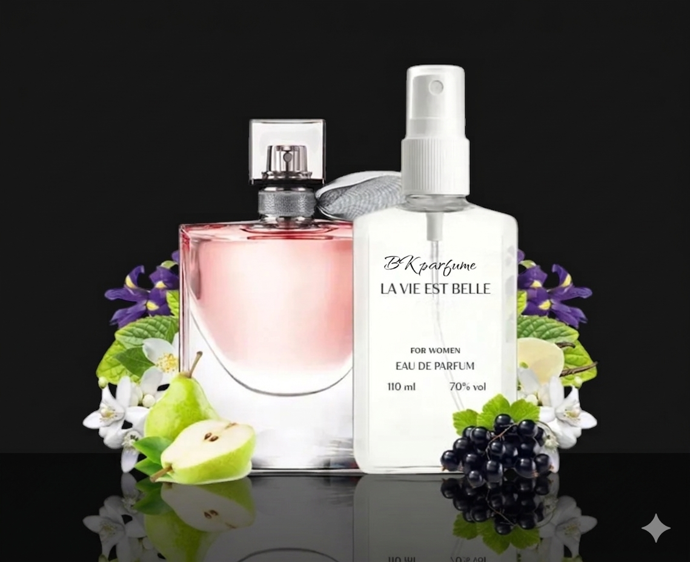

Бренд: BKparfume
Категорія: жіночі парфуми
Об'єм: 110 мл
Ціна: 160 грн
La Vie Est Belle у BK Parfume обирають, коли хочеться солодкий, компліментарний і дуже впізнаваний жіночий аромат. Смородина, ірис і праліне дають насичене гурманське звучання, яке добре пасує для прохолодного сезону, вечора та святкових моментів. Якщо вам потрібні жіночі парфуми з яскравим шлейфом, це одна з найсильніших позицій у колекції.
BKparfume La Vie Est Belle добре працює для жінок, які шукають аромат на кожен день, побачення або особливу подію. Завдяки формату 110 мл цей аромат зручно брати як основний варіант на сезон або додавати до особистої колекції для окремих ситуацій.
Для денного використання краще працюють більш свіжі та квіткові композиції, а для вечора варто дивитися на солодші й глибші акорди. Якщо ви підбираєте схожі композиції, перегляньте також сторінку з унісекс парфумами BK Parfume та каталог ароматів BK Parfume.
Ноти аромату
- Верхні: смородина, груша
- Серцеві: іриси, жасмин
- Базові: пралін, ваніль, сандал
Як замовити
Ви можете перейти у каталог з уже відкритим релевантним фільтром, додати аромат у кошик та оформити замовлення з доставкою по Україні. Для оптових або комбінованих замовлень також діють вигідніші ціни за кількість.